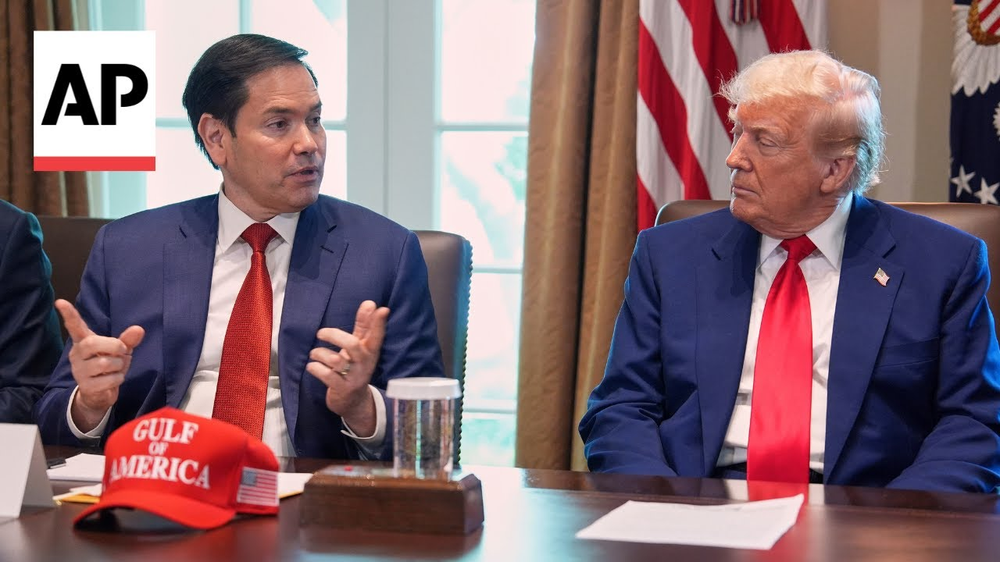

来B站一起耍【Global每日英语简报】
【马可·鲁比奥从政治对手到特朗普首席外交官的历程】
Summary: President Donald Trump increasingly trusts Secretary of State Marco Rubio, appointing him as national security adviser, marking another milestone in their evolving relationship from 2016 rivals to close allies in Trump's second term.
摘要： 唐纳德·特朗普总统越来越信任国务卿马可·鲁比奥，任命他为国家安全顾问，这标志着他们从2016年的对手到特朗普第二任期亲密盟友的关系演变中的又一个里程碑。

⏱️ Estimated Reading Time: 2 min
President Donald Trump is putting more trust in his Secretary of State, Marco Rubio, tapping him to fill a vacancy as his national security adviser.
唐纳德·特朗普总统越来越信任他的国务卿马可·鲁比奥，任命他填补国家安全顾问的空缺。
It's another step in the evolving relationship between Trump and Rubio, who went from political rivals in 2016 to close allies during Trump's second term.
这是特朗普和鲁比奥关系演变的又一步，他们从2016年的政治对手变成了特朗普第二任期的亲密盟友。
As candidates, they traded personal insults when competing for the Republican presidential nomination.
作为候选人，他们在争夺共和党总统提名时互相进行人身攻击。
Do you know that in Florida they hate little Marco Rubio so much?
你知道在佛罗里达州他们有多讨厌小马可·鲁比奥吗？
It's true.
这是真的。
I will go anywhere to speak to anyone before I let a con artist get a hold of the Republican party and the conservative movement.
我绝不会让一个骗子掌控共和党和保守派运动，为此我愿意去任何地方与任何人对话。
After Trump won, their relationship remained contentious.
特朗普获胜后，他们的关系仍然紧张。
But eight years later, Rubio campaigned for Trump during his return to the White House.
但八年后，鲁比奥在特朗普重返白宫时为他助选。
We are not garbage.
我们不是垃圾。
We are patriots who love America.
我们是热爱美国的爱国者。
And thank you for running, Mr. President.
总统先生，感谢您参选。
Now Rubio's proven he's adept at aligning himself with Trump's America first foreign policy positions and turning away from previously held priorities.
现在鲁比奥证明了他擅长与特朗普的“美国优先”外交政策立场保持一致，并放弃之前坚持的优先事项。
Rubio was once a major supporter of foreign aid, but oversaw the widespread purge of US aid programs as acting administrator of the largely shutdown agency.
鲁比奥曾是外援的主要支持者，但作为基本关闭的机构的代理负责人，他监督了对美国援助项目的大规模清理。
Rubio's expanding roles have echoes of other multitasking Trump advisers like special envoy Steve Witkoff, a lead negotiator in numerous peace talks.
鲁比奥不断扩大的角色让人联想到其他多任务并行的特朗普顾问，比如多次和平谈判的首席谈判代表、特使史蒂夫·维特科夫。